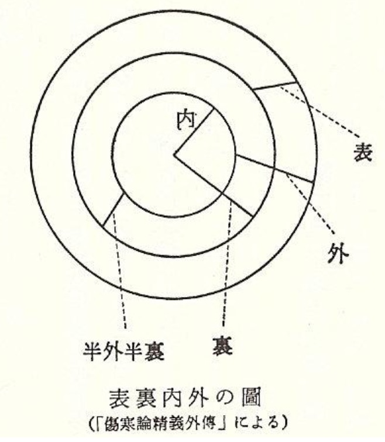

'상한론'은 종종 육경전변(六經傳變, Liùjīng Chuánbiàn) 시스템을 통해 해석됩니다. 일반적으로 이 단계들은 고정된 순서로 진행되는 것으로 묘사됩니다.
하지만, 표리(表裏)의 중간 단계로 묘사되는 소양(少陽) 단계의 위치에 대해 의문점이 있습니다. 왜 소양병이 태양(太陽, Greater Yang)과 양명(陽明, Bright Yang) 뒤에 오는 것일까요? 논리적으로는 표(表, 태양)에서 '반표반리(半表半裏, 소양)'를 거쳐 리(裏, 양명)로 진행되는 것이 타당해 보입니다. '반표반리(소양)'는 질병 진행의 과도기적 단계입니다.
학자들은 '상한론' 본문에 기술된 사례들에서 질병이 실제로 어떻게 전변되었는지 확인하기 위해 '상한론'의 모든 조문을 분석했습니다. 아래의 도해는 중국의 하오완산(郝萬山) 교수의 강의에서 발췌한 것입니다.
Taiyang
Yangming
Shaoyang
Taiyin
Shaoyin
Jueyin
Hao, W. (2020). Shang Han Lun [Treatise on Cold Damage Disorders]. Beijing: Renmin Weisheng Chubanshe.
일반적인 질병 전변은 실제로 태양경, 소양경, 양명경의 순서를 따르며, 양명에서 소양으로 이동하는 경우는 발견되지 않았습니다. 더욱이, "상한론" 본문 자체에는 양명은 최종 단계이므로 다른 단계로 전변되지 않는다는 구절이 포함되어 있습니다. 위에서 언급된 도표에서도 양명에서 다른 곳으로의 전변은 없습니다(태양으로 가는 한 가지 경우 제외).
양명은 중앙에 위치하며 '토(土, Tǔ)'를 주관하여 만물이 귀속되므로 다시 전변될 곳이 없습니다. 따라서 환자가 처음에 오한을 느끼더라도 보통 이틀 안에 그칩니다. 이것이 양명병의 특징입니다. ([184] 答曰: 陽明居中, 主土也, 萬物所歸, 無所復傳, 始雖惡寒, 二日自止, 此爲陽明病也.)
이러한 사실에 근거할 때, 우리는 태양, 양명, 소양이라는 구식 순서를 고수해야 할까요, 아니면 논리적이고 원문에 의해 뒷받침되는 태양, 소양, 양명의 순서를 채택해야 할까요?
상한론(傷寒論)은 송나라 시대에 이르러 주로 육경(六經) 체계를 통해 해석되기 시작했습니다. 현존하는 가장 오래된 판본인 강치본 상한론(康治本 傷寒論)은 일본에서 발견되었으며 단 65개의 조문으로만 구성되어 있습니다. 또한 총 50개의 처방만을 포함하고 있습니다.
상한론의 원본은 소실되어 초기 내용을 정확히 알 수 없습니다.
왕숙화(王叔和)는 처음으로 상한론을 편찬하면서 육경과 "가여불가(可與不可, 허용되는 것과 허용되지 않는 것)"라는 병의 증후와 금기 사항을 중심으로 구성했습니다. 이 구조는 초기에 전해진 문헌인 맥경(脈經) 7권에서 발견되며, 이는 두 가지 학술적 관점으로 이어집니다:
일부 학자들(예: 마계흥, 전초진)은 이것이 장중경의 원본 내용을 보존하고 있다고 주장합니다.
다른 학자들(예: 이순보)은 이것이 왕숙화의 개인적인 편집 방식을 반영한 것이라고 믿습니다.
이후 손사막(孫思邈)의 천금익방(千金翼方)은 내용을 육경에 따라 재분류했으며, 송나라 판본의 상한론은 이 육경 분류를 기본 틀로 채택했습니다.
'상한론'을 '내경'의 경락 이론에 맞춰 후대, 특히 송나라에 의해 수정된 육경 시스템을 통해 해석하는 것에 대해서는 상당한 비판이 있습니다. 미국에서 흔히 번역되어 출판되는 버전은 대체로 송나라 판본에 기반하고 있으며, 이는 '상한론'을 '내경'의 학설에 맞추려 했던 왕숙화와 같은 학자들의 영향을 받은 것입니다.
'상한론'의 재평가는 '내경'에 기반한 교조적인 이해를 따를 것이 아니라, '상한론'의 실제 텍스트에 근거해야 합니다. 이는 질병의 단계가 사례에 따라 다른 경로로 전변될 수 있으며, 대개 표(表)에서 리(裏)로, 즉 태양에서 소양을 거쳐 양명으로 진행됨을 시사합니다.
일부 태양, 양명, 소양을 표증, 태음,소음,궐음을 리증으로 가르치는 경우가 있는데, 이는 명백한 오류입니다. 양명부증(陽明腑證)은 리실증으로 치료법또한 사하법입니다. 사하법은 리증의 치료법입니다.
태양 (太陽)
표증 (表證)
발한 (發汗)
양명 (陽明)
리증 (裏證)
사하 (瀉下)
소양 (少陽)
반표반리 (半表半裏)
화해 (和解)
다음은 의학사의 위대한 인물들의 비판 내용입니다:
일본의 상한론 연구에 큰 업적을 남긴 오츠가 케이세츠(大塚敬節, Ōtsuka Keisetsu,1900-1980)는 육경병을 表裏로 보았을 때 表는 태양이고 裏는 양명과 삼음이며, 內外로 보았을 때 外는 삼양이고 內는 삼음이며, 外와 裏가 중복되는 영역이 소양의 半表半裏라고 하였다.

내원: 양명 / 중간원: 소양
청나라의 유가언(喻嘉言)은 왕숙화(王叔和)와 성무기(成無己)가 '내경' 이론에 텍스트를 맞추려 하면서 '상한론'의 본래 의미와 가르침이 모호해졌다고 주장했습니다. 유가언은 이러한 영향에서 벗어나 '상한론'을 재평가할 것을 주장했습니다.
일본 에도 시대의 요시마스 토도(吉益東洞)는 삼음삼양(三陰三陽) 이론을 오류라고 비판하며, 규격화된 질병 전변 순서라는 개념 자체를 부정했습니다. 그는 " '상한론'에서 육경은 문자 그대로 질병이 머무는 장소가 아니며, 단지 틀로 사용될 뿐이다. 실제 치료에서 의사들은 육경에 구애받지 않고 증상을 따른다."라고 말했습니다. 이 비판은 1928년에 출판된 일본의 '상한론' 연구에서 두드러집니다.
당나라의 손사막(孫思邈)은 그의 '천금요방(千金要方)'에서 육경 전변 시스템을 따르지 않았습니다. 대신 그는 피부 → 살 → 근육 → 가슴 → 복부 → 위장이라는 여섯 부분으로 질병이 진행되는 다른 순서를 제시하며, 질병 진행에 대한 독특한 관점을 제공했습니다.
명나라의 장경악(張景岳)은 질병의 전변이 왕숙화(王叔和)가 제안한 태양병 → 양명병 → 소양병 → 태음병 → 소음병 → 궐음병의 '육경 시스템'에 의해 엄격하게 지배되지 않는다고 강조했습니다. 대신 장경악은 전통적인 정사병리(正邪病理)에 근거하여, 정기(正氣)와 사기(邪氣)의 불균형으로 인해 질병이 신체의 더 약한 부분으로 전변된다고 주장했습니다.
역시 청나라의 서대춘(徐大椿)은 그의 저서 '상한류방(傷寒類方)'에서 관습적인 육경 전변 시스템을 비판하며, 전통적인 단계를 따르기보다 증상 패턴에 따라 치료법을 분류했습니다.
이러한 비판들은 진화하는 의학 이론과 실제에 기반한 '상한론'에 대한 지속적인 논쟁과 재해석을 강조하며, 해석이 교조적인 틀에 엄격히 고수되기보다는 실제 적용과 원문 텍스트에 더 많이 의존해야 함을 시사합니다.
Six-stage transfer system
The "Shang Han Lun" is often interpreted through the six-stage transfer system (六經傳變, Liùjīng Chuánbiàn). Typically, the stages are depicted as progressing in a fixed sequence.
However, there's a questionable point regarding the position of the Shaoyang (少陽) stage, which is described as both exterior and interior. Why does it come after Taiyang (太陽, Greater Yang) and Yangming (陽明, Bright Yang)? Logically, it seems it should progress from exterior (Taiyang) to 'half exterior and half interior' (Shaoyang) and then to interior (Yangming). 'half exterior and half interior' (Shaoyang) is a transitional phase in disease progression.
Scholars have analyzed all texts of the 'Shang Han Lun' to see how diseases actually transferred in cases described within the Shang Han Lun text. The illustrations below are from lectures by Hao Wansan (郝萬山) of China.
Taiyang
Yangming
Shaoyang
Taiyin
Shaoyin
Jueyin
Hao, W. (2020). Shang Han Lun [Treatise on Cold Damage Disorders]. Beijing: Renmin Weisheng Chubanshe.
The usual disease transfer indeed follows the sequence from Taiyang, to Shaoyang, to Yangming, without any cases of moving from Yangming to Shaoyang. Furthermore, the text of "Shang Han Lun" itself contains phrases stating that from Yangming, the disease does not transfer to another stage because it is a terminal stage. In the diagram mentioned above, there are no transfers from Yangming (except one case to Taiyang).
Yangming is centrally located and governs 'earth' (土, Tǔ), to which all things return, with no further transfers. Thus, even if a patient initially feels chills, it typically resolves within two days. This is indicative of a Yangming disease.([184] 答曰: 陽明居中, 主土也, 萬物所歸, 無所復傳, 始雖惡寒, 二日自止, 此爲陽明病也.)
Based on this fact, should we stick to the outdated sequence of Taiyang, Yangming, Shaoyang, or adopt the logical and text-supported order of Taiyang, Shaoyang, Yangming?
The Shanghan Lun (傷寒論) began to be interpreted primarily through the Six Meridians (六經) framework by the Song Dynasty. The earliest surviving version, the Kōji-bon Shanghan Lun (康治本 傷寒論), was discovered in Japan and consists of only 65 clauses. It also includes only 50 prescriptions in total.
The original version of the Shanghan Lun has been lost, making it impossible to know its exact early content.
Wang Shuhe (王叔和) was the first to compile the Shanghan Lun, organizing it around the Six Meridians and indications vs. contraindications—a system known as "可與不可" (What is Permissible and What is Not). This structure is found in the early transmitted text Mai Jing (脈經), Vol. 7, leading to two scholarly perspectives:
Some (e.g., Ma Jixing, Qian Chaochen) argue it preserves Zhang Zhongjing’s original content.
Others (e.g., Li Shunbao) believe it reflects Wang Shuhe’s personal editorial approach.
Later, Sun Simiao’s Qianjin Yifang (千金翼方) reclassified the content according to the Six Meridians, and the Song edition of the Shanghan Lun adopted this Six Meridians classification as its primary framework.
There is considerable critique of interpreting the "Shang Han Lun" through a six-stage system aligned with the "Neijing's" meridian theory, a framework modified by later generations, particularly by the Song dynasty. The version commonly translated and published in the U.S. is largely based on the Song dynasty edition, influenced by scholars like Wang Shuhe, who adapted the "Shang Han Lun" to fit the "Neijing's" doctrines.
The reevaluation of the "Shang Han Lun" should not follow a dogmatic understanding based on the "Neijing," but rather should be grounded in the actual text of the "Shang Han Lun," indicating that the stages of the disease can transfer along different paths depending on the case, usually progressing from exterior to interior, i.e., from Taiyang through Shaoyang to Yangming.
Some may teach that Taiyang, Yangming, and Shaoyang are exterior patterns, while Taiyin, Shaoyin, and Jueyin are interior patterns, but this is a clear error. Yangming Organ patterns are interior-excess patterns, and the treatment method is purgation. Purgation is a treatment for interior patterns.
Taiyang
Exterior Pattern
Sweating
Yangming
Interior Pattern
Purgation
Shaoyang
Half-Exterior, Half-Interior
Harmonization
The following are the critics from the great figures in Chinese medical history;
Ōtsuka Keisetsu (1900-1980), who made significant contributions to the study of the Shanghan Lun in Japan, stated that when viewing the Six Channel diseases in terms of exterior-interior, the exterior corresponds to Taiyang, while the interior corresponds to Yangming and the three yin channels. When viewing them in terms of outer-inner, the outer corresponds to the three yang channels, while the inner corresponds to the three yin channels. He explained that the half-exterior-half-interior of Shaoyang represents the overlapping area between the outer and interior.
During the Qing dynasty, Yu Jiayan (喻嘉言) argued that the original meanings and teachings of the "Shang Han Lun" had been obscured by the interpretations of Wang Shuhe and Cheng Wuji (成無己), who attempted to align the text with "Neijing" theories. Yu advocated for a reevaluation of the "Shang Han Lun" free from these influences.
Yoshimasu Todo (吉益東洞) in the Edo period (Japan) criticized the three yin and three yang (三陰三陽) theory as fallacious, denying the very concept of a regulated disease transfer sequence. He stated, “In the 'Shang Han Lun,' the six stages are not literally places where the disease resides; they are merely used as a framework. In actual treatment, physicians follow the symptoms, not being restricted by the six stages.” This critique is prominent in the Japanese study of "Shang Han Lun" published in 1928.
Sun Simiao in the Tang dynasty did not follow the six-stage transfer system in his "Qian Jin Yao Fang". Instead, he presented a different sequence of disease progression through six parts: skin → flesh → muscles → chest → abdomen → stomach, offering a unique perspective on disease progression.
During the Ming dynasty, Zhang Jingyue emphasized that the transmission of diseases is not rigidly governed by the ‘six-stage system' of Taiyang disease → Yangming disease → Shaoyang disease → Taiyin disease → Shaoyin disease → Jueyin disease as proposed by Wang Shuhe (王叔和). Instead, Zhang argued that diseases transfer to the weaker parts of the body due to an imbalance between the righteous qi and the pathogenic qi, based on the traditional pathology of right and wrong (正邪病理).
Xu Daichun (徐大椿), also of the Qing dynasty, criticized the conventional six-stage transfer system in his publication "Shang Han Liu Fang", categorizing treatments based on symptom patterns rather than following the traditional staging.
These critiques highlight the ongoing debate and reinterpretation of the "Shang Han Lun" based on evolving medical theories and practices, suggesting that interpretations should be guided more by practical applications and the actual text rather than adhering strictly to dogmatic frameworks.